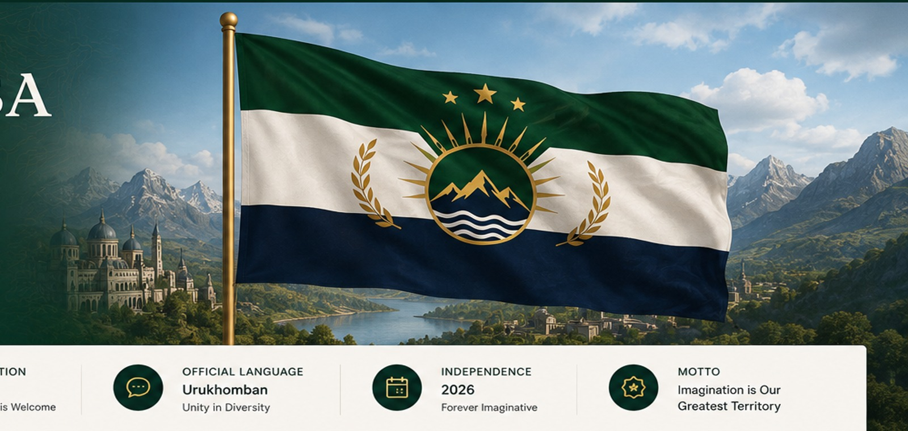
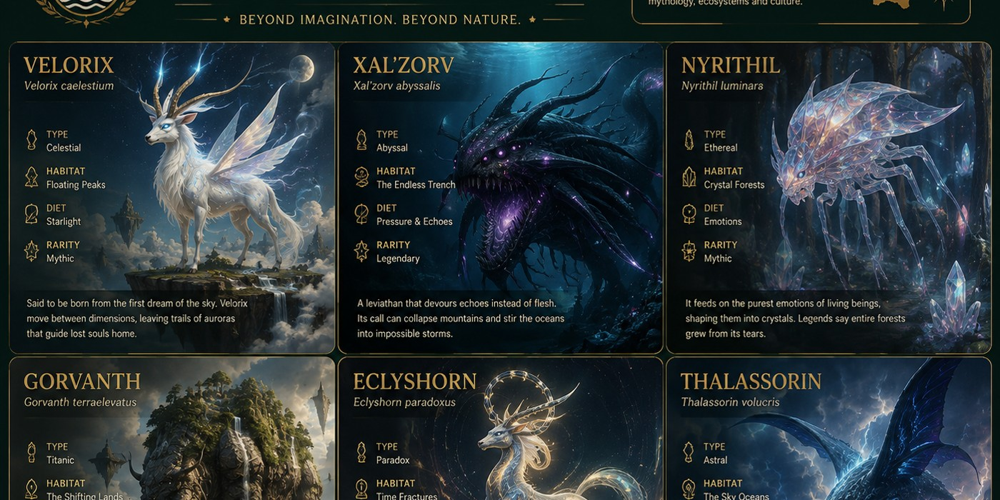

ABOUT URUKHOMBA
Urukhomba is a peaceful fictional country that values creativity, respect and freedom. It is not bound by geography, but by a shared belief in imagination and possibility.
READ MOREUrukhomba is a fictional country born from imagination, humor and creativity. It is a place where stories begin, ideas grow, and everyone is a citizen of imagination.
Urukhomba is a peaceful fictional country that values creativity, respect and freedom. It is not bound by geography, but by a shared belief in imagination and possibility.
READ MORE DISCOVER THE MEANING →
DISCOVER THE MEANING →


What began as a mysterious invented name grew into a fictional republic with its own visual identity, places, symbols and myths.

Urukhomba began as an imaginary place and gradually became a world-building project.
The flag combines green, cream, navy and gold to represent imagination, peace and courage.

Urukhomban folklore contains creatures and landscapes that deliberately break the rules of reality.
Urukhomban culture celebrates imagination, curiosity, dignity, humor and the freedom to build stories beyond ordinary borders.
Green for life and imagination, cream for peace, navy for depth and gold for aspiration.

Mountains, waves and a golden sun represent ambition, journeys and an open horizon.
Some legendary animals feed on echoes, lightning, emotions or even possible futures.
A country made of imagined geography: mountain capitals, mirrored lakes and lands that refuse to stay in one place.
The capital of Urukhomba, set in a high mountain basin of towers, gardens and archives.

A legendary lake said to reflect the sky a visitor remembers rather than the sky above.

A region whose valleys, rivers and roads are never found in exactly the same place twice.
A public archive of fictional stories, impossible memories, dreams, legends and places written by citizens of imagination from around the world.
Write in the language you think, dream or remember in. Your story can be a myth, memory, horror story, strange village, philosophical tale, lost place, impossible creature, or something nobody has named yet.
① Submit your story and language.
② It enters a private moderation queue.
③ You approve, edit or reject it.
④ Approved stories appear in their language folder.
⑤ Selected stories can become Urukhomba social posts or narrated videos.
Tell us a story from somewhere that may never have existed.
A fictional government built around curiosity, creativity and playful civic traditions.
Create a fun Urukhomba citizenship card. It is a fictional souvenir and has no legal status.